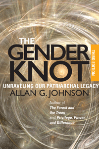

<body bgcolor="#FFFFFF" text="#000000" link="#0000FF" vlink="#CC0000" alink="#CC0000"><center><hr width="350" size="1" align="center" noshade>A compelling approach to gender inequality that empowers both men and women to be part of the solution instead of just part of the problem<hr width="350" size="1" align="center" noshade><p><a href="https://cdcshoppingcart.uchicago.edu/Cart/ChicagoBook.aspx?ISBN=9781439911839&&PRESS=temple" target="_top">Buy this book!</a> | <a href="https://cdcshoppingcart.uchicago.edu/Cart/Cart.aspx?PRESS=temple" target="_top">View Cart</a> | <a href="https://cdcshoppingcart.uchicago.edu/Cart/Cart.aspx?PRESS=temple" target="_top">Check Out</a></p><p></p></center><!--none//--><h1>The Gender Knot</h1>
<H2>Unraveling Our Patriarchal Legacy</H2>
<H2>Third Edition</H2>
<h3>Allan G. Johnson</h3>
<P>cloth 1-4399-1183-5 $89.50, Sep 14, <FONT COLOR=#990033>Available</FONT>
<br>paper 1-4399-1184-3 $29.95, Sep 14, <FONT COLOR=#990033>Available</FONT>
<br>Electronic Book 1-4399-1185-1 $29.95 <FONT COLOR=#990033>Available</FONT>
<BR> 322 pp
6x9
1&nbsp;table 2&nbsp;figures
</P><BLOCKQUOTE><I>"One of the foremost contributors to our understanding of gender, Allan Johnson has an exceptional grasp of the costs of patriarchy for both women and men. </I>The Gender Knot<I> illuminates vast areas of previously unexamined and unnamed effects of ‘power over’ social systems and provides a beacon of hope and a message of courage. This book is brilliant and life-changing. Anyone who wants to rekindle a belief in the possibility of a more just and equitable world should read it. Anyone who wants to participate in creating urgently needed social change </i>must<i> read it."</i><br>&#151<b>Judith V Jordan, Ph.D.</b>, Director of the Jean Baker Miller Training Institute, Wellesley Centers for Women, and Assistant Professor, Harvard Medical School</I></BLOCKQUOTE>
<P><I>The Gender Knot</I>, Allan Johnson's response to the pain and confusion that men and women experience by living with gender inequality, explains what patriarchy is and is not, how it works, and what gets in the way of understanding and doing something about it. Johnson's simple yet powerful approach avoids the paralyzing trap of guilt, blame, anger, and defensive denial that often results from conversations about gender.
<p>This edition features:
<ul><li><p> Updated references, data, resources, and examples, especially in relation to issues of sexual orientation and gender identity
<li><p> A glossary of terms
<li><p> A new chapter—"What Changes and What Does Not: Manhood and Violence"—that provides an extended analysis of both the causes and social invisibility of men's violence</ul>
<BR>&nbsp;<h2>Excerpt</h2><P>Excerpt available at <a href="http://www.temple.edu/tempress">www.temple.edu/tempress</a></p>
<BR>&nbsp;<h2>Reviews</h2>
<p><i>"</i>The Gender Knot<i> is a book that never leaves my side, intellectually at least. Since I was first introduced to Allan Johnson’s work, this text has served as a faithful companion to my personal and professional growth. Johnson lays out how patriarchy, as a social system, interacts with all of us, in one of the most accessibly written books on the topic. He proficiently explains how this damaging system hurts people of all genders and gently guides us away from reactionary feelings of guilt and toward those of social responsibility. </I>The Gender Knot<i> is an invaluable and timeless resource for everyone who cares about gender equality."</i>
<br>&#151<b>Anita Sarkeesian</b>, Feminist Frequency
<p><i>"Johnson’s book is beautifully written, thoughtful, and provides compelling analyses of patriarchy and the powerful ideology that supports it and inhibits change. It is a guidebook for a life-changing adventure."</i> <br>&#151<b>Rebecca Bach</b>, <i><b>Contemporary Sociology</i></b>
<p><i>"Allan Johnson has written one of the best, most readable, and most comprehensive accounts of patriarchy that is available in print."</i> <br>&#151<b>Paula Rothenberg</b>, editor of <i>Race, Class, and Gender in the United States</i>
<p><i>"This is a brilliant accounting of patriarchy . . . a long, hard and unflinchingly honest look at how patriarchy works."</i>
<br>&#151<i><b>Off Our Backs </i></b>
<p><i>"As any knitter will tell you, the way to untangle a knot is not to pull hard on one end, but to gently shake the entire skein until all the threads are loosened. In this book, Allan Johnson gently and patiently shakes the patriarchal knot until each of the constituent threads becomes analytically clear."</i> <br>&#151<b>Michael Kimmel</b>, author of <i>Manhood in America</i>
<p><i>"A good introduction for women as well as men, but most importantly, it is from a man who can clearly explain to men what’s happening and what they can do to change it."</i>
<br>&#151<i><b>Feminist Bookstore News </i></b>
<p><i>"</i>The Gender Knot<i> is a unique book that fills a void in the literature on gender. Highly accessible and a pleasure to read, Johnson[’s account] never oversimplifies complex issues. His engaging style will appeal to a wide audience."</i> <br>&#151<b>Abby L. Ferber</b>, <i><b>Gender and Society</i></b>
<p><i>"An excellent gift for anyone who ‘just doesn’t get it’ about feminism."</i> <br>&#151<b>Arnold Kahn</b>, <i><b>Psychology of Women Quarterly </i></b>
<p><i>"This book can be especially recommended to male students as an exemplary model of plainspoken and conscientious writing about male supremacy that is neither naive nor navel-gazing and that takes feminist theory and analysis absolutely seriously. This honorable book promises to be around a long time. </i>The Gender Knot<i> belongs on the reading list of every course in sexual politics that encourages students to engage patriarchy meaningfully."</i> <br>&#151<b>John Stoltenberg</b>, <i><b>Men and Masculinities</i></b>
<p><i>"Johnson takes patriarchy to task, critically examining its dynamics to reveal an underlying, pervasive domination-and-control mentality that is destructive to both females and males."</i>
<br>&#151<i><b>Choice</i></b>
<p><i>"This book is well written, well argued, and nails all the key issues right on the head. It’s the best I’ve seen in this genre."</i> <br>&#151<b>Michael Schwalbe</b>, author of <i>Unlocking the Iron Cage</i>
<p><i> "Johnson argues that patriarchy is responsible for the oppression of women and that its core quality—male-identified control—generates a dynamic that promotes competition, oppression, violence, and fear and is as harmful to men as to women.... Clearly written and thought provoking.... Summing Up: Highly Recommended."</i>
<br>&#151<i><b>Choice</i></b>
<p><i>"Johnson shows with specific examples how patriarchy, as a social system, can be considered the root of all other social evils such as racism, homophobia, and classism.... [He] tackles these exceptionally thorny, complex issues by presenting them in manageable prose using accessible examples, in effect, opening up the feminist critique of patriarchy to a comparatively larger readership."</i><br>&#151<i><b>Teachers College Record </i></b>
<p><i>"Johnson is a nationally recognized sociologist best known for his work on issues of privilege and oppression, especially in relation to gender and race.... In </i>The Gender Knot<i>, Johnson’s goal is to make readers believe in and want to change the patriarchy.... Johnson’s opinions are well constructed and explained.... Reading this book will open some eyes and challenge us to be agents of change."</i> <br>&#151<i><b>The New Social Worker</i></b>
<BR>&nbsp;<h2>Contents</h2><P>
<p>Preface
<br>Acknowledgments
<p><b>Part I: What Is This Thing Called Patriarchy?</b>
<br>1. Where Are We?
<br>2. Patriarchy, the System: An It, Not a He, a Them, or an Us
<br>3. Why Patriarchy?
<br>4. Ideology, Myth, and Magic: Femininity, Masculinity, and "Gender Roles"
<br>5. Feminists and Feminism
<p><b>Part II: Sustaining Illusions, Barriers to Change</b>
<br>6. Thinking About Patriarchy: War, Sex, and Work
<br>7. What Patriarchy?
<br>8. It Must Be Women
<p><b>Part III: Unraveling the Patriarchal Legacy</b>
<br>9. Shame, Guilt, and Responsibility
<br>10. What Changes and What Does Not: Manhood and Violence
<br>11. What Can We Do? Unraveling the Gender Knot
<p>Appendix: Resources for Unraveling the Knot
<br>Notes
<br>Glossary
<br>Index
</P><BR>&nbsp;<H2>About the Author(s)</H2>
<P><b>Allan G. Johnson</b> is a nationally recognized sociologist, nonfiction author, novelist, and public speaker best known for his work on issues of privilege and oppression, especially in relation to gender and race. He is the author of numerous books, including <i><a href="1366B_reg.html" target="_top">The Forest and the Trees: Sociology as Life, Practice, and Promise</a></i> (Temple) and <i>Privilege, Power, and Difference</i>. His work has been translated into several languages and excerpted in numerous anthologies. Visit him online at <a href="http://www.agjohnson.us" target="new">www.agjohnson.us</a> and follow his blog at <a href="http://agjohnson.wordpress.com" target="new">http://agjohnson.wordpress.com</a>.</P>
<BR><H2>Subject Categories</H2>
<p><A HREF="/tempress/gender.html" TARGET="_top">Gender Studies</a>
<BR><A HREF="/tempress/sociology.html" TARGET="_top">Sociology</a>
<BR><A HREF="/tempress/women.html" TARGET="_top">Women's Studies</a>
</p>
<p align="center"><a href="https://cdcshoppingcart.uchicago.edu/Cart/ChicagoBook.aspx?ISBN=9781439911839&&PRESS=temple" target="_top">Buy this book!</a> | <a href="https://cdcshoppingcart.uchicago.edu/Cart/Cart.aspx?PRESS=temple" target="_top">View Cart</a> | <a href="https://cdcshoppingcart.uchicago.edu/Cart/Cart.aspx?PRESS=temple" target="_top">Check Out</a></p><p><font face="Arial" size="1"><a href="copyright.html" onMouseOver="window.status='Web Copyright Policy';return true;" onMouseOut="window.status=''" title="Web Copyright Policy">&copy;</a> 2016 <a href="http://www.temple.edu" target="new" onMouseOver="window.status='Link to Temple University home page';return true;" onMouseOut="window.status=''" title="Link to Temple University home page">Temple University</a>. All Rights Reserved. http://www.temple.edu/tempress/titles/1780A_reg.html</font></p>